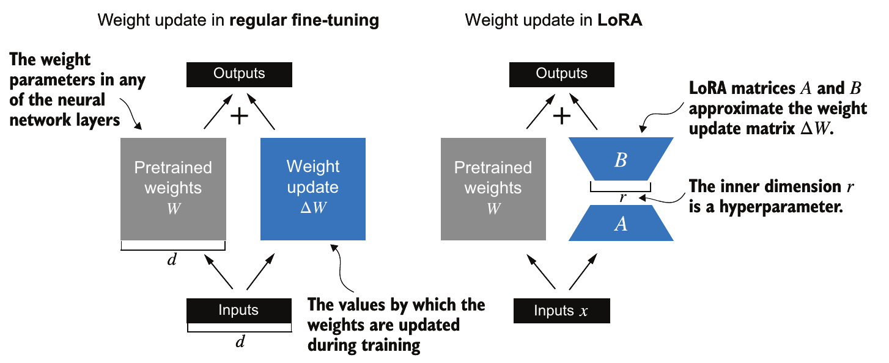
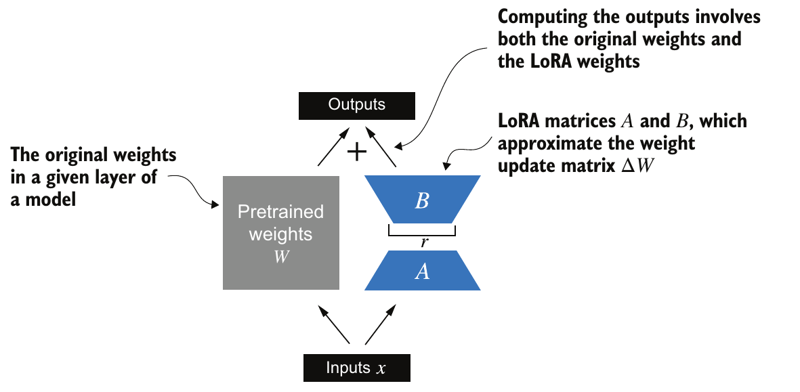
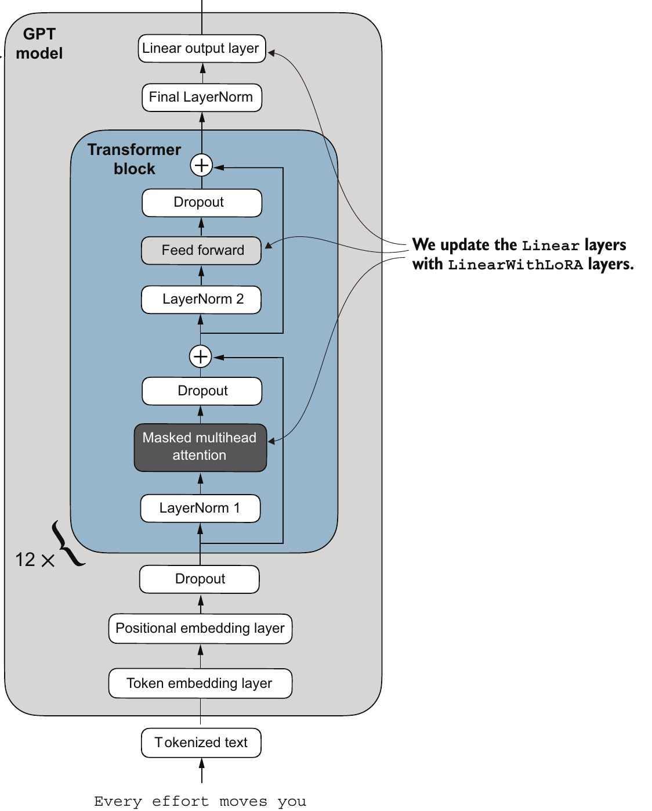

Outline
지시 미세조정(13주차)을 큰 모델에 그대로 하면 GPU 메모리가 모자란다.
그래서 학습 대상을 줄이는 미세조정 방법 LoRA를 차례로 배운다.
- LoRA = 파라미터 W는 동결하고 변화량만 작은 행렬 두 개로 학습하는 방법
| 장 | 답하는 질문 | 이어받는 선행 지식 |
|---|---|---|
| 2~3 | 전체 미세조정의 메모리는 얼마인가 | AdamW 학습 루프(9주차), float32(10주차) |
| 4~14 | LoRA는 무엇을 학습하고 어떻게 갱신하는가 | 행렬곱 @(6주차), 동결·학습 대상(11주차) |
| 15~22 | GPT-2에서 얼마나 줄고 학습 뒤 어떻게 쓰는가 | GPT 구조(7주차), GPT-2 분류 모델(11주차) |
파라미터 1개당 학습 중 보관하는 값
큰 모델을 미세조정하면 GPU 메모리가 모자라서, 메모리가 어디에 쓰이는지부터 센다.
모든 파라미터를 학습하면 하나마다 16바이트를 두고, 동결하면 그중 12바이트가 빠진다.
| 보관하는 값 | 보관 이유 | 바이트 | 동결하면(11주차) |
|---|---|---|---|
| 파라미터 값 | 출력 계산 | 4 | 그대로 남음 |
기울기 .grad | loss.backward()의 결과 | 4 | 없음 |
| AdamW 이동평균 2개 | 기울기·기울기² 평균(10주차) | 8 | 없음 |
| 합 | 16 | 12바이트 = 학습 대상마다 |
- float32 = 값 하나 4바이트(10주차), 계산 중간값을 담는 메모리는 제외
7B 모델 전체 미세조정의 메모리
파라미터 하나에 16바이트가 드니, 개수를 곱하면 모델 전체의 메모리를 알 수 있다.
7B 모델을 통째로 학습하면 112 GB가 필요해서 개인용 GPU 한 장(16~24 GB)에 안 들어간다.
| 모델 | 파라미터 수 × 16바이트 | 메모리 | GPU 한 장(16~24 GB) |
|---|---|---|---|
| GPT-2 124M 분류 모델 | 124,441,346 × 16 | 1.99 GB | 들어감 |
| 7B 모델 | 7,000,000,000 × 16 | 112 GB | 안 들어감 |
- GPT-2 124M 분류 모델 = 11주차 모델, 모든 층을 학습한다고 가정
- 7B = 이름 기준 개수(13주차 Qwen2.5-7B급), 1 GB = 10억 바이트
변화량 ΔW: 전체 미세조정이 학습하는 값
메모리를 줄이려면 먼저 미세조정이 층의 파라미터를 어떻게 바꾸는지 알아야 한다.
미세조정은 W에 같은 크기의 변화량 ΔW를 더하고, 전체 미세조정은 ΔW 값을 모두 학습한다.

교재 Figure E.1 왼쪽: 아래 Inputs → 위 Outputs, 회색 Pretrained weights W(사전학습 파라미터) + 파란 Weight update ΔW
- W = 한 Linear 층의 파라미터 행렬 d × d(GPT-2 attention 층은 d = 768)
- 변화량 ΔW = 미세조정이 W에 더하는 값들의 행렬, W와 같은 모양
LoRA의 구조: ΔW 대신 A·B의 곱
W와 ΔW는 d × d(d = 행·열 수)라서, ΔW 값을 모두 학습하면 학습 대상이 너무 많다.
LoRA는 W를 그대로 두고, ΔW 대신 얇은 행렬 A와 B 두 개만 학습해서 학습 대상을 줄인다.
교재 Figure E.1 오른쪽: ΔW 자리에 사다리꼴 A와 B, 가운데 폭 = r
- LoRA(Low-Rank Adaptation, Hu et al., 2021) = W는 동결, ΔW 대신 A·B를 학습
- A·B = A(d × r)와 B(r × d)의 곱, 랭크 r(rank) = A의 열 수 = B의 행 수(d보다 훨씬 작게)
작은 예: d = 4, r = 1인 A·B
얇은 A·B가 정말 ΔW를 대신하는지 작은 숫자(d = W의 행·열 수)로 확인한다.
d = 4, r = 1이면 A·B는 ΔW처럼 4 × 4가 되고, 학습 대상은 16개에서 8개로 준다.
A = [1, 2, 0, −1]ᵀ(4 × 1, ᵀ = 세로로 세운 열), B = [0.5, 0, −1, 1](1 × 4), 값 = 모양 설명용 임의 값
| 0.5 | 0 | −1 | 1 |
| 1 | 0 | −2 | 2 |
| 0 | 0 | 0 | 0 |
| −0.5 | 0 | 1 | −1 |
| 학습 대상 | 이 예 | 일반식 |
|---|---|---|
| ΔW 직접 | 4 × 4 = 16개 | d × d |
| A + B | 4 + 4 = 8개 | 2 × d × r |
- 실제 크기 d = 768, r = 8: 589,824개 → 12,288개(2.08%)
LoRA 층의 출력 식
W를 동결한 채 A·B를 학습하려면, 층이 출력을 낼 때 A·B도 함께 써야 한다.
LoRA 층은 입력 x를 원래 경로(xW)와 LoRA 경로(xAB)로 나눠 계산해서 더한다.

교재 Figure E.3: 아래 x → 두 갈래(왼쪽 W, 오른쪽 A → B) → 위 +에서 합
- α(alpha) = LoRA 경로 결과에 곱하는 배율(GPT-2 예제 16, 작은 예 2)
- x(W + AB) = xW + xAB → W를 바꾸지 않고 두 경로로 나눠 계산
작은 예 ①: 원래 경로 xW
출력의 두 경로를 작은 예로 하나씩 계산하며, 먼저 원래 경로를 본다.
x = [1, 0, 2, −1]이 W를 지나면 xW = [−0.02, −0.29, −0.83, 0.29]가 된다.
| 0.12 | 0.02 | −0.05 | 0.65 |
| −0.71 | −0.39 | 0.16 | 0.01 |
| −0.11 | −0.15 | −0.41 | −0.02 |
| −0.08 | 0.01 | −0.04 | 0.32 |
| 1 × 0행 |
| + 0 × 1행 |
| + 2 × 2행 |
| − 1 × 3행 |
| = [−0.02, −0.29, −0.83, 0.29] |
작은 예 ②: B = 0에서 시작한 LoRA 경로
LoRA를 붙이자마자 출력이 바뀌면, 사전학습으로 익힌 모델의 실력을 잃은 채 학습이 시작된다.
B를 0으로 시작하면 LoRA 경로가 0이라서, 붙인 직후 출력은 원래 층과 똑같다.
| ① xW | 원래 경로 = [−0.02, −0.29, −0.83, 0.29] |
| ② xA | 1 × 1 + 0 × 2 + 2 × 0 + (−1) × (−1) = 2 |
| ③ α · xA · B | 시작 B = [0, 0, 0, 0] → 2 × 2 × B = [0, 0, 0, 0] |
| ④ y | xW + 0 = [−0.02, −0.29, −0.83, 0.29] |
- 입력 x = [1, 0, 2, −1], A = [1, 2, 0, −1]ᵀ(6장), α = 2, ① = 8장 결과
학습 준비: 동결한 W와 학습 대상 A·B
이제 코드로 학습하려면 PyTorch에 무엇을 바꿀지 알려 주어야 한다.
W는 동결하고, A와 B에만 requires_grad를 켜서 학습 대상으로 정한다.
W_ = W.clone() # 동결: requires_grad 기본값 False
A = A0.clone().requires_grad_(True) # 학습 대상, 시작 [1, 2, 0, -1]
B = torch.zeros(1, 4, requires_grad=True) # 학습 대상, 시작 0clone= 텐서 복사,W_= W의 복사본,requires_grad기본값 False = 동결A0= 작은 예의 A 시작값,requires_grad_(True)= 이 텐서를 학습 대상으로 지정torch.zeros(1, 4, requires_grad=True)= 0으로 채운 1 × 4 텐서를 학습 대상으로 생성
기울기 계산: 동결한 W와 시작 A
학습 대상을 정했으니, loss.backward()가 어디에 기울기를 채우는지 확인한다.
W에는 기울기가 생기지 않고, A의 기울기는 처음에 모두 0이다.
y = x @ W_ + 2.0 * (x @ A @ B) # α = 2
loss = torch.nn.functional.cross_entropy(y, torch.tensor([2]))
loss.backward()
print("W_.grad:", W_.grad)
print("A.grad:", A.grad.flatten())W_.grad: None
A.grad: tensor([0., 0., 0., 0.])- y = 4개 칸의 점수(logits), 손실 = 정답 2번 칸의 cross_entropy(9주차)
W_.grad= None → 동결한 W는 기울기 계산 안 함A.grad= 4칸 모두 0 → 학습 대상 A도 첫 계산의 기울기 = 0
A의 기울기가 0인 이유: B = 0
A도 학습 대상인데 첫 기울기가 0이라서, A는 학습이 안 되는 것처럼 보인다.
B가 0이라 A의 기울기가 0이고, A까지 0이면 B도 학습되지 않아 A는 0이 아닌 값으로 시작한다.
y = x @ W_ + 2.0 * (x @ A @ B) # α = 2A.grad: tensor([0., 0., 0., 0.])- B = 0이면 A를 조금 바꿔도 x @ A @ B = 0 그대로 → y·손실이 안 바뀜 → A의 기울기 = 0
- A·B 둘 다 0이면 같은 이유(x @ A = 0)로 B의 기울기도 0
- → 갱신해도 둘 다 0 그대로, 학습이 시작되지 않음 → A는 0이 아닌 값으로 시작
경사하강법 한 걸음: B만 바뀜
A의 기울기가 0이면, 첫 갱신에서 A와 B 중 무엇이 바뀌는지 확인해야 한다.
학습률 0.1로 한 걸음 갱신하면 기울기가 있는 B만 바뀌고, A는 두 번째부터 바뀐다.
print("B.grad:", B.grad)
with torch.no_grad(): # 경사하강법 한 걸음, 학습률 0.1
A -= 0.1 * A.grad
B -= 0.1 * B.grad
print("B:", B.data)B.grad: tensor([[ 1.1199, 0.8549, -3.5018, 1.5269]])
B: tensor([[-0.1120, -0.0855, 0.3502, -0.1527]])torch.no_grad()= 갱신을 기울기 기록에서 제외(9주차),B.data= B의 값- B = 0 − 0.1 × B.grad → 정답 2번 칸 값만 양수 0.3502
- A = A − 0.1 × 0 → 그대로, B ≠ 0이 된 두 번째 갱신부터 A도 바뀜(A.grad = [−0.485, 0, −0.970, 0.485])
갱신 뒤 확인: W는 그대로, 손실 감소
B만 바뀐 한 걸음이 정말 학습이 되었는지, W는 그대로인지 확인한다.
한 번 갱신한 뒤에도 W는 그대로이고, 손실은 2.083에서 0.725로 줄었다.
y_new = x @ W_ + 2.0 * (x @ A @ B)
loss_new = torch.nn.functional.cross_entropy(y_new, torch.tensor([2]))
print("W unchanged:", torch.equal(W_, W))
print("loss:", round(loss.item(), 3), "->", round(loss_new.item(), 3))W unchanged: True
loss: 2.083 -> 0.725y_new·loss_new= 갱신한 A·B로 다시 계산한 출력·손실torch.equal= 두 텐서의 값이 모두 같은지, True = W 그대로- 정답 2번 칸 확률 0.125 → 0.484
GPT-2 블록의 Linear 층
LoRA를 GPT-2에 붙이려면 블록 안의 어느 층이 Linear인지 알아야 한다.
블록마다 attention의 Linear 4개와 FFN의 Linear 2개에 LoRA를 붙인다.
| 그림 라벨 | 뜻 |
|---|---|
| Masked multihead attention | multi-head attention + causal mask(6주차) |
| Feed forward | FFN(7주차): Linear → GELU → Linear |
- attention Linear 4개 = W_query·W_key·W_value(6주차 W_Q·W_K·W_V) + out_proj
- out_proj = head 결과를 합치는 층
GPT-2에서 LoRA를 붙이는 Linear 층 73개
블록 하나에 Linear가 6개이니, GPT-2 124M 분류 모델 전체에서는 몇 개인지 센다.
블록 12개 × 6개에 출력층 1개를 더해, 모두 73개 층에 LoRA를 붙인다.

교재 Figure E.4: 화살표 = LoRA 층(LinearWithLoRA)으로 바꿀 Linear 층, Linear output layer = 출력층
| Linear 층 | 입력 → 출력 | 개수 |
|---|---|---|
| attention(W_query 등) | 768 → 768 | 4 × 12 = 48 |
| Feed forward 첫 층 | 768 → 3072 | 12 |
| Feed forward 둘째 층 | 3072 → 768 | 12 |
| 출력층 | 768 → 2 | 1 |
| 합 | 73 |
73개 층의 학습 대상 합: 전체의 2.14%
층이 73개라서, 층마다 학습 대상을 더해야 LoRA가 얼마나 줄였는지 알 수 있다.
층마다 A와 B의 값 수를 r = 16으로 더하면, 학습 대상은 전체 파라미터의 2.14%다.
| 층 | (입력 + 출력) × r | × 개수 |
|---|---|---|
| 768 → 768 | (768 + 768) × 16 = 24,576 | × 48 = 1,179,648 |
| 768 → 3072 | (768 + 3072) × 16 = 61,440 | × 12 = 737,280 |
| 3072 → 768 | (3072 + 768) × 16 = 61,440 | × 12 = 737,280 |
| 768 → 2 | (768 + 2) × 16 = 12,320 | × 1 = 12,320 |
| 합 | 2,666,528 |
- 2,666,528 ÷ 전체 124,441,346 = 2.14%
랭크 r과 만들 수 있는 ΔW: r = 1과 r = 2
r을 작게 하면 만들 수 있는 ΔW가 줄어드는지 확인해야 한다.
r = 1로는 못 만드는 ΔW가 있고, r = 2는 B의 두 행을 섞어서 그 ΔW를 만든다.
- A·B의 i행 = A의 i행에 있는 r개 값을 B의 r개 행에 각각 곱해 더한 것
- 목표 ΔW의 0행 [1, 0, 0, 0], 1행 [0, 1, 0, 0](설명용 임의 값)
| r | 만드는 방법 | 결과 |
|---|---|---|
| 1 | 모든 행 = A의 값 × B 한 행 | 두 행이 서로의 배수가 아니라 불가능 |
| 2 | B의 두 행 [1, 0, 0, 0]·[0, 1, 0, 0] | A의 행으로 두 B 행을 골라 섞음 |
| A의 0행 [1, 0] | 1 × B 0행 + 0 × B 1행 = [1, 0, 0, 0] | |
| A의 1행 [0, 1] | [0, 1, 0, 0] → 가능 |
랭크 r의 선택: 변화의 종류와 비용
r을 키우면 만들 수 있는 ΔW는 늘지만 학습 대상도 늘어서, 고르는 기준이 필요하다.
작은 r부터 키워 보다가, 검증 정확도가 더 좋아지지 않으면 그 r에서 멈춘다.
| r별 학습 대상 | r = 8: 1,333,264개(1.07%), r = 16: 2,666,528개(2.14%) |
| 대가 | 학습 대상이 r에 비례 → 기울기·AdamW 값 메모리도 비례 증가 |
| 고르는 법 | 작은 r부터 키우며 검증 정확도가 더 나아지지 않으면 멈춤 |
| LoRA 논문 | GPT-3 175B: r = 1과 64의 정확도 비슷(73.4%, 73.5%) |
| 이 예제 | r = α = 16 = GPT-2 분류 예제의 설정(2.14%로 충분히 작음) |
학습 뒤 합치기: W' = W + α · A · B
갱신한 A·B(코드 이름 A1·B1, 13장)를 쓸 때마다 두 경로로 계산하면 계산이 더 든다.
W' = W + α · A · B로 한 행렬에 합치면 출력은 같고 계산은 원래 층만큼만 든다.
W_merged = W + 2.0 * (A1 @ B1)
print(x @ W_merged)
print(x @ W + 2.0 * (x @ A1 @ B1))
print(torch.allclose(x @ W_merged, x @ W + 2.0 * (x @ A1 @ B1)))tensor([[-0.4680, -0.6320, 0.5707, -0.3208]])
tensor([[-0.4680, -0.6320, 0.5707, -0.3208]])
TrueW_merged= 두 경로를 합친 4 × 4 행렬 W', 2.0 = α, x = 8장 입력torch.allclose= 두 텐서가 반올림 오차 안에서 같은지 판정
합치지 않고 따로 보관하기
합치면 작업마다 W' 전체를 저장해야 해서, 작업이 많으면 저장 공간이 커진다.
모델 하나에 작업별 A·B만 따로 두면 공간은 아끼지만, 쓸 때 계산이 조금 늘어난다.
| GPT-2 124M 분류 모델(float32) | 파일 크기 |
|---|---|
| 파라미터 전체 | 497.8 MB |
| A·B만(r = 16) | 10.7 MB |
| 작업 3개: 합치기 | 3 × 497.8 MB ≈ 1.49 GB |
| 작업 3개: 따로 보관 | 497.8 MB + 3 × 10.7 MB ≈ 530 MB |
- 대가 = 사용 때 xA·(xA)B 곱셈 추가 → 768 × 768 층, r = 16에서 곱셈 4.2% 증가
LoRA 학습 뒤에도 남는 메모리: 동결한 파라미터
학습 대상이 줄었으니(17장), 3장의 1.99 GB가 얼마나 주는지 센다.
GPT-2는 0.54 GB로 줄지만, 7B는 동결한 파라미터만 28 GB라 GPU 한 장(16~24 GB)을 넘는다.
| GPT-2 124M 분류(11주차) | 계산 | 메모리 |
|---|---|---|
| 학습 대상 A·B | 2,666,528 × 16바이트 | 42.7 MB |
| 동결한 파라미터 전체(W 포함) | 124,441,346 × 4바이트 | 497.8 MB |
| 합 | ≈ 0.54 GB | |
| 7B 동결한 파라미터 | 7,000,000,000 × 4바이트 | 28 GB |
- 학습 대상 = 값 4 + 기울기 4 + AdamW 8 = 16바이트(2장), 동결 = 값 4바이트
- 동결한 4바이트는 LoRA로 줄지 않음 → 7B는 더 큰 GPU 필요
Summary
| 주제 | 핵심 |
|---|---|
| 메모리 문제 | 전체 미세조정 = 파라미터 1개당 16바이트 → 7B 모델 112 GB |
| LoRA 구조 | W 동결, A·B만 학습(B = 0 시작), 출력 = xW + α · xAB |
| GPT-2 규모 | r = 16 학습 대상 = 전체의 2.14%, 학습 메모리 1.99 GB → 0.54 GB |
| 7B + LoRA | 동결한 파라미터만 28 GB → GPU 한 장(16~24 GB)보다 커서 더 큰 GPU 필요 |
| 학습 뒤 사용 | 합치기 W' = W + α · A · B, 또는 A·B만 따로 보관(10.7 MB) |